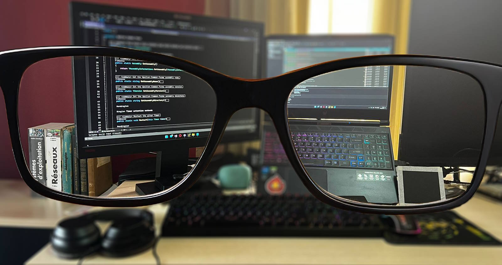
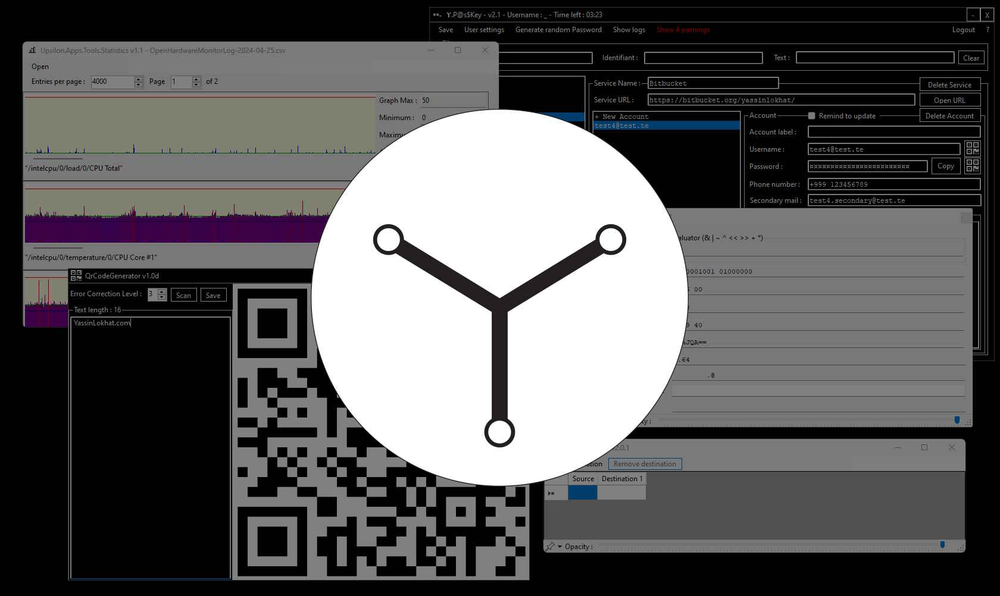

Ayant commencé à coder à 15 ans, j'ai pu explorer de nombreux aspects du développement logiciel.
J'ai d'abord commencé avec le C, qui m'a enseigné les bases de la programmation — et, plus important encore, les algorithmes et le fonctionnement des ordinateurs. J'ai ensuite appris le C++ en autodidacte, où j'ai découvert la programmation orientée objet. En parallèle, pour varier, j'ai étudié le PHP pour m'ouvrir au web, et j'ai découvert l'automatisation Windows avec AutoIt.
Lors de ma première année à l'Institut supérieur polytechnique de Madagascar, j'ai assisté aux présentations de projets des étudiants de troisième année et découvert C# et .NET. La rapidité avec laquelle on pouvait créer des applications Windows avec cette technologie m'a impressionné, et j'en ai fait mon axe principal.
Au fil des années, j'ai aussi essayé d'autres langages et technologies comme Java, JavaScript et Python, sans aller aussi loin que dans la famille C/C++/C#.

Pendant les deux premières années de ma vie professionnelle, j'ai développé plusieurs outils de façon indépendante, et il était courant de recréer les mêmes fonctionnalités d'un projet à l'autre.
C'est ainsi qu'est né Upsilon Ecosystem. Il se compose de deux parties : Upsilon.Common, une base de code partagée par tous mes projets, et Upsilon.Apps pour les applications et les outils.
Vous pouvez consulter la documentation d'Upsilon.Common et télécharger la dernière version (ZIP).
Pas besoin d'installer des dizaines de dépendances. Il suffit de l'application Upsilon Ecosystem et du runtime .NET 6.
L'interface graphique est personnalisable. En plus des composants proposés par .NET, Upsilon Ecosystem fournit aussi des composants originaux.
Upsilon Ecosystem ne s'appuie pas sur une base de données commerciale : il a la sienne, et utilise un système de chiffrement sur mesure.
Voici quelques-uns des projets les plus représentatifs que j'ai conçus.
Ils vont d'une simple boîte à outils regroupant plusieurs utilitaires à des applications plus avancées, comme un gestionnaire de mots de passe local.
Chargement des projets…
Copyright © Yassin Lokhat